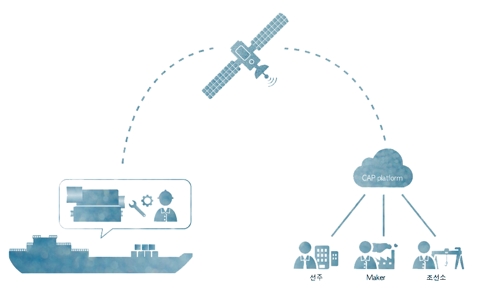
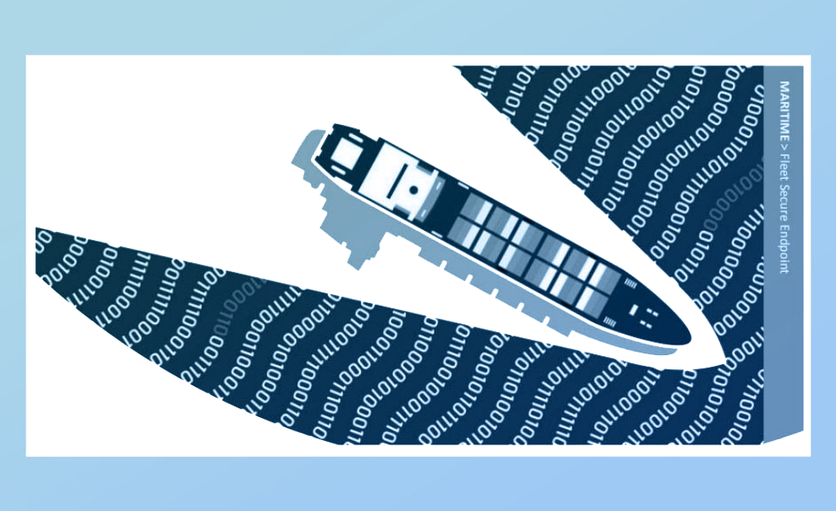

선박 IOT 수집 서비스

선박의 Machine Data를 효과적으로 취득할 수 있으면 효율적인 Machine 상태감시 및 진단을 할 수 있고 인공위성을 통하여 육상에서 선박의 Machine의 Data를 취득
선박사이버보안

Anti-virus, Mal-ware detection, intrusion detection 등 선박에서 사용할 수 있도록 특화된 사이버보안 솔루션. 인공위성을 통해서 자동 Patch update
eLogBook
보급형 전자로그북. Deck log, Engine log, Noon-report, Ab-log기능을 가진 선박용 소프트웨어. 육상 웹서비스로 자동 링크
선박네트워크

선박네트워크 솔루션 제공